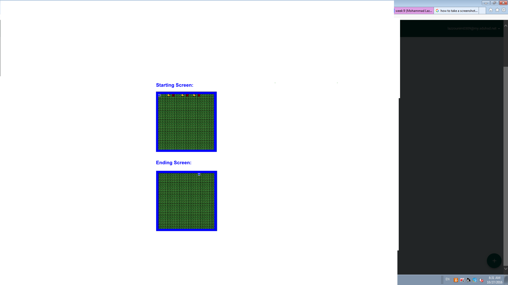
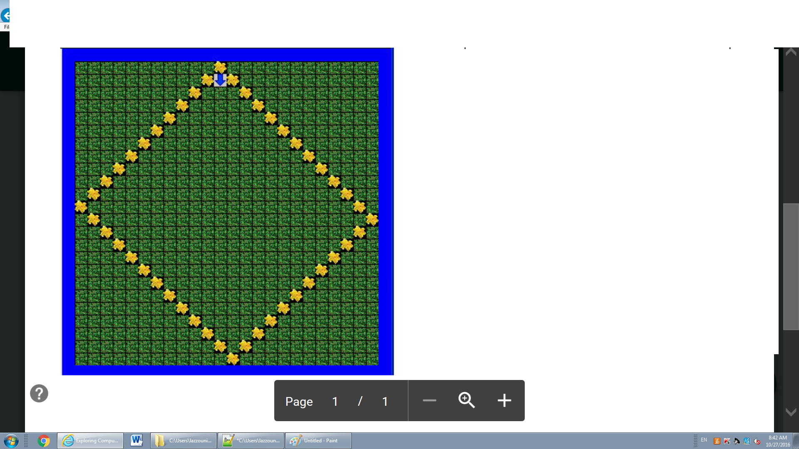
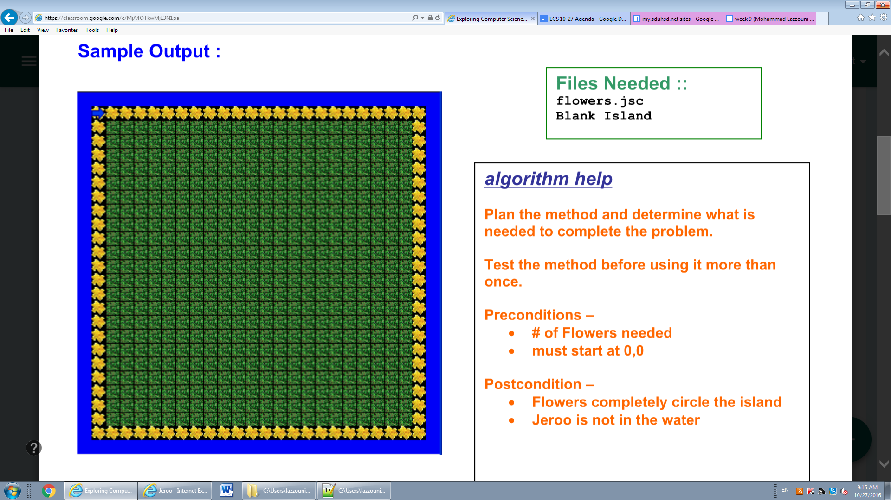
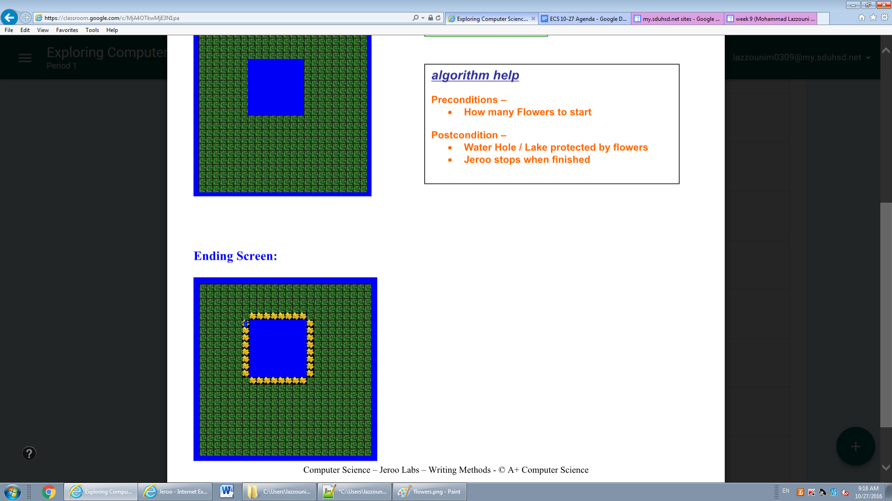
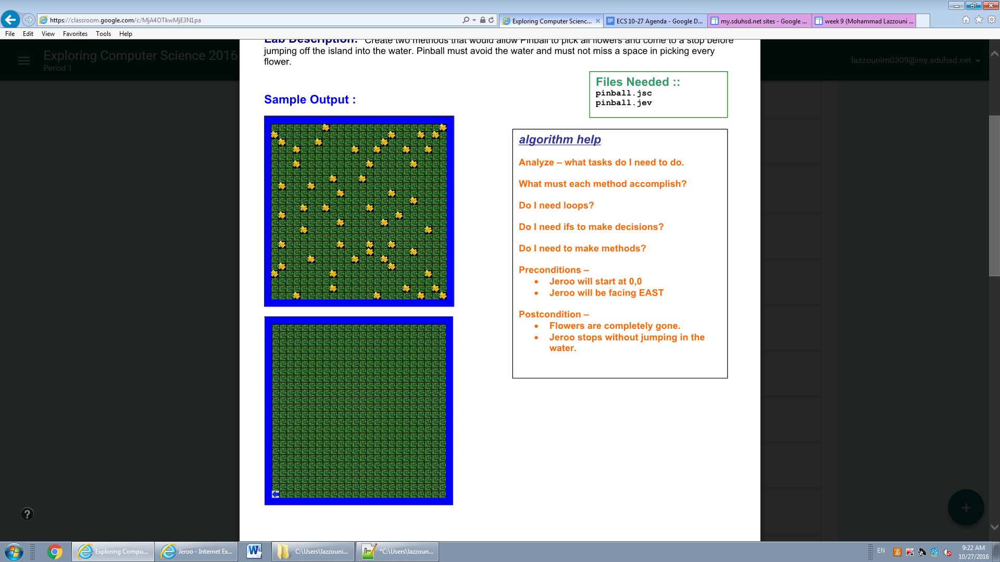
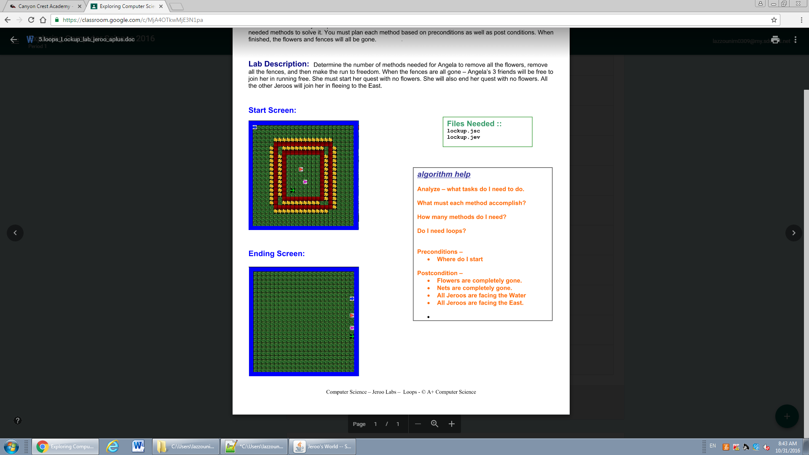
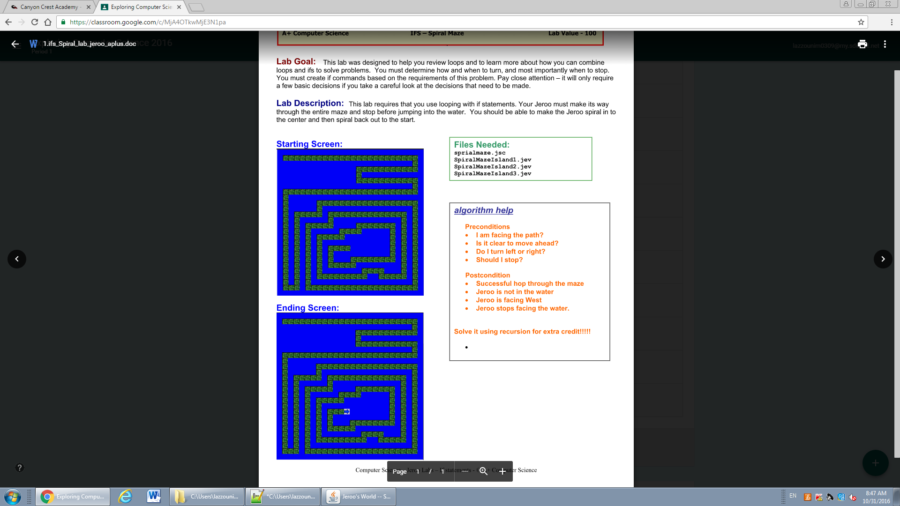
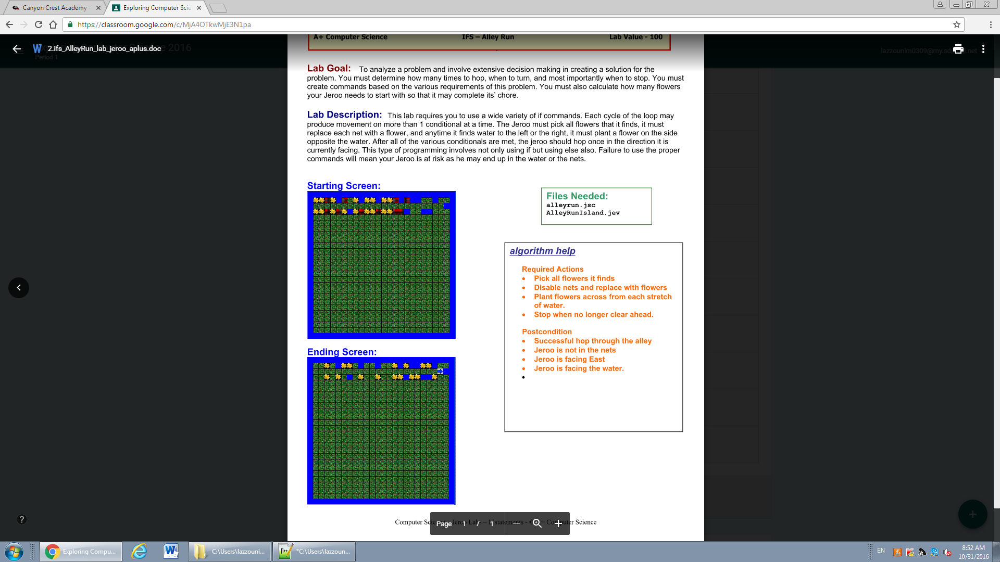

Jeroo Unit 1
Nets
The goal of this lab was to take the flowers
and toss them into the nets, to free the Jeroo
I learned the basics of Jeroo in this program
Diamond
The goal of this lab was to make a diamond of flowers
on the island
Jeroo Unit 2
Flowers
The goal of this lab was to make a box around the whole
island
In this project I learned how to plant flowers in
a big area
Watering Hole
The goal of this lab was to make a box around a body
of water
Jeroo Unit 3
Pinball
The goal of this lab was to clear all the flowers
on the island
In this lab I learned how to use loops to finish a task
Lockup
The goal of this lab was to help save the Jeroo trapped
in the cage. You had to bring one Jeroo in to clear all
the flowers in the map. Then you had to make it open a way
for each jeroo to escape. Then writte a program for each
Jeroo
I learned how to make a method for each Jeroo individually
and then to make them all escape with only 4 commands
Jeroo Unit 4
Spiralmaze
The goal of spiral maze was to create a way for the Jeroo
to find a way to get to the end of each maze. We were given
3 mazes to complete.
In this lab I learned how to make an if statement that would
loop untill the Jeroo made it to the end of each maze.
I also learned how to bring them back to the beginning.
Alley Run
The goal of this lab was to pick a flower if it was next
to you. To disable all of the nets. Last, to make all of
the water blocks have a flower opposite to them
In this lab I learned to make a loop to tell the Jeroo
to pick all flowers,get rid of all nets,and to put flowers
across from each water block.